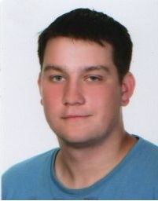

O Mnie

Witam na mojej stronie. Nazywam się Łukasz Wojcieszonek i mieszkam w Bydgoszczy.
Od zawsze interesuje się nowymi technologiami.
W 2011 r. ukończyłem Liceum Ogólnokształcące nr III w Bydgoszczy na kierunku matematyczno-fizycznym.
W 2015r. zdobyłem kwalifikacje E.12 - Montaż i eksploatacja komputerów osobistych oraz urządzeń peryferyjnych.
Rok później zdobyłem kwalifikacje E.13 - Projektowanie lokalnych sieci komputerowych i administrowanie sieciami oraz
kwalifikacje E.14 - Tworzenie aplikacji internetowych i baz danych oraz administrowanie bazami.